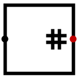

位计数器
位计数器
| 库： | 算术 |
| 引入版本： | 2.6.0 |
| 外观： |
 |
行为
该组件统计其输入中有多少个位为 1，并在输出端给出 1 的总数。例如，给定 8 位输入 10011101，输出为 5，因为输入中有五个位为 1（第一个、最后一个以及中间连续三个位置）。
如果任何输入位是浮空或错误值，则输出会在受不确定输入影响的位置上包含错误位，具体取决于这些浮空/错误值被计为 0 还是 1。例如，如果 14 位输入为 111x10110x1101，则输出至少为 9（如果 x 被解释为 0），最多为 11（如果它们被解释为 1）。因此，输出为 10EE：高两位为 1 和 0，因为 9 到 11 之间所有整数的高两位都是 1 和 0；低两位为 EE，因为这些整数在低两位上会变化。
引脚
- 西侧边缘（输入，位宽与 数据位宽 属性一致）
- 要统计其中 1 位个数的输入。输入数量取决于 输入数量 属性。
- 东侧边缘（输出，位宽按下文所述计算）
- 输入中为 1 的位数。输出的位宽是存储最大可能值所需的最小位数；该最大可能值为 数据位宽 属性与 输入数量 属性的乘积。
属性
当组件被选中或正在放置时，数字键 0 到 9 可更改其 输入数量 属性，Alt-0 至 Alt-9 可更改其 数据位宽 属性。
- 数据位宽
- 输入的位宽。
- 输入数量
- 输入值的数量。
手形工具行为
无。
文本工具行为
无。
返回库参考